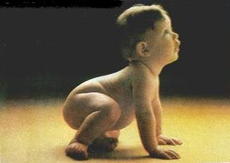

Egosantrizm, "çocuðun çevresini
keþfettiði, bu çevrenin kendisi için yaratýldýðý inancýný taþýdýðý ve
baþka kimselere aldýrýþ etmediði bir dönemdir."(108) Çocuðun kendisi ile
kendi dýþýnda olanlarý ayýramadýðý bu dönem(109), genellikle 2-6 yaþlarýný
kapsamaktadýr.(110)
Egosantrizm dönemindeki çocuk, dünyayý
yalnýz kendi bakýmýndan görmektedir. Ona göre, çevresindeki kiþiler ve etrafýndaki
eþyalar kendisi gibi düþünürler ve hissederler. Bundan dolayý inançlarý da
günlük tasavvur ve idraklerinden ayrý deðildir.(111)
Çocuktaki egosantrik düþünceler zaman zaman
çeþitli þekillerde tezahür eder, çocuk konuþmalarýnda hep kendisinden bahseder,
oyuncaklarýyla baþkalarýnýn oynamasýna izin vermez. Anne babasýnýn yalnýz
kendisiyle ilgilenmesini ister ve bu yüzden, yeni doðan kardeþini kýskanýr, onu
istemez.
Çocuk egosantrizminin çeþitli tezahür
þekillerinden biri de, "Finalizm (Gayecilik)"dir. Çocuktaki finalizme göre
her þey insanýn iþine yaramak için yaratýlmýþtýr ve her þeyin hayatta bir görevi
vardýr.(112) Çocuðun bu tür bir düþünceye sahip olmasýnda yetiþkinlerin rolü
küçümsenemez. Çünkü, gözünü açtýðý andan itibaren bütün ihtiyaçlarý
büyükleri tarafýndan karþýlanan çocuk, dünyadaki her þeyin kendisine hizmet için
yaratýlmýþ olduðuna inanmakla pek hatalý sayýlmaz. Son çocukluk yýllarýna kadar
devam eden bu düþüncenin tesiriyle, çocuk her þey hakkýnda pratik bir þekilde akýl
yürütmektedir. Meselâ, "Güneþ bizi aydýnlatmak için yaratýlmýþtýr.";
"nehir, üzerinde kayýkla gezmek için akmaktadýr."(113)
Ýnsana yaratýlýþtan bu tür duygularýn
verilmiþ olmasý dikkat çekicidir. Acaba insanýn, kendisine çeþitli nimetler sunan
yaratýcýsýný aramasý mý istenmiþtir? Yoksa, her þeyin olduðu gibi, bu dünyaya
gönderiliþin de bir gayesi olduðu düþüncesine, bir yönlendirme mi vardýr?
Kur'ân-ý Kerîm'de insanoðlunun egosantrik duygularýna hitap eden pek çok ayetin
varlýðý da dikkat çekicidir. Allah Teâlâ,
"Ademoðlunu þerefli kýlarak, onlarýn
karada ve denizde gezmelerini saðladýðýný, temiz nimetlerle onlarý
rýzýklandýrdýðýný"(114) bildirirken; baþka birçok âyette ise, "Ýnsan
için yeryüzünde ve gökyüzünde olan her þeyi; Güneþ'i, Ay'ý, yýldýzlan, denizi,
geceyi, gündüzü, nehirleri... müsahhar (faydalanýlabilir) kýldýðýndan(115)
bahsetmektedir.
108. Alaylýoðlu-Oðuzkan, age,
s. 27.
109. Mithat Enç, Ruhbilim Terimleri Sözlüðü, Ank. 1974, s. 30.
110. Refia Þemin, Karakter Formasyonu, Ýst. 1968, s. 17; A. Oðuzkan
Eðitim Terimleri Sözlüðü, Ank. 1974, s. 25.
111. Pazarlý, Din Psikolojisi, s. 24; A. Vergote, Çocukta Din. (çev.
E. Fýrat) AÜIFD. XXII, 323.
112. Jacquin, age, s. 79
113. Jacquin, age, s. 45.
114. Ýsrâ, 17/70.
115. Ra'd, 13/2; Ýbrahim, 4/32, 33; Nahl, 16112, 13, 14; Hacc, 22/65.
Dr.Mehmed Emin Ay